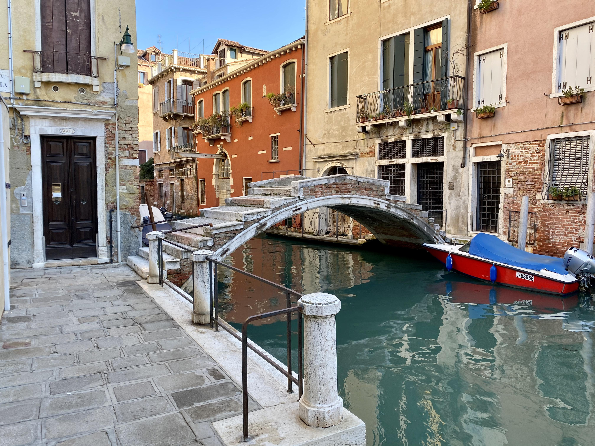
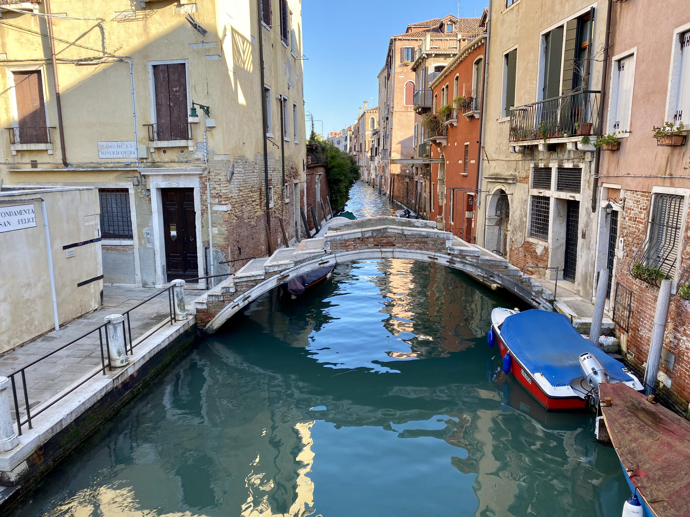
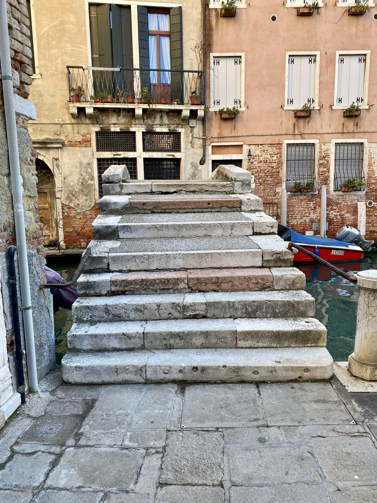

In passato, i veneziani si spostavano quasi esclusivamente in barca. I primi ponti in pietra furono costruiti intorno al 1170, e fu solo quando il traffico pedonale iniziò a diventare consistente nel 1800 che furono introdotti i parapetti.
In the past, the people of Venice moved around almost exclusively by boat. The first stone bridges were built around 1170, and it was only when pedestrian traffic started to become substantial in the 1800s that parapets were introduced.

Tutti i 416 ponti di Venezia, eccetto uno, sono fiancheggiati da ringhiere o muretti. L'eccezione è il Ponte del Chiodo (dal nome della famiglia Chiodo).
All 416 bridges of Venice, except one, are flanked by railings or walls. The exception is the Chiodo Bridge (named after the Chiodo family).

Questo ponte non serve a collegare vie pubbliche poiché conduce a un ingresso privato, ma la sua mancanza di parapetti — che ricorda come apparivano tutti i ponti veneziani un tempo — lo rende meritevole di una visita.
This bridge does not serve to connect any public thoroughfares as it leads to a private entrance, but its lack of parapets—recalling how all Venetian bridges used to look—makes it well worth a visit.
